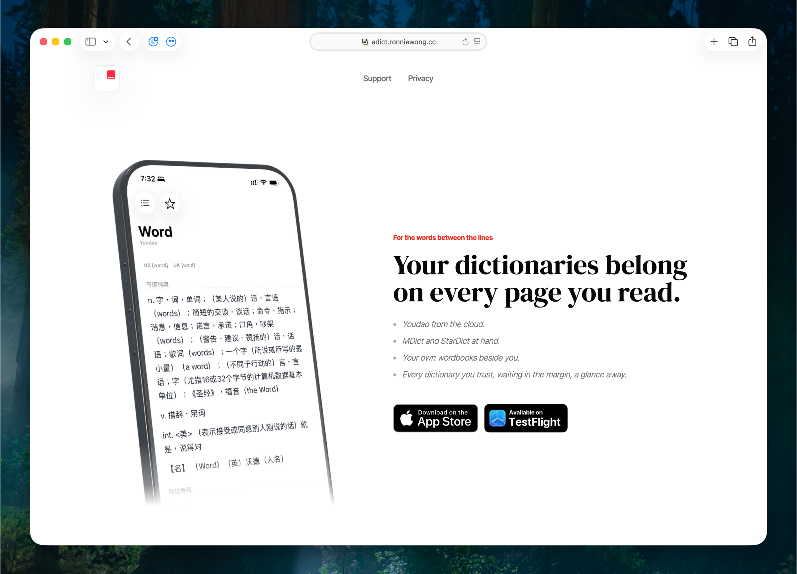
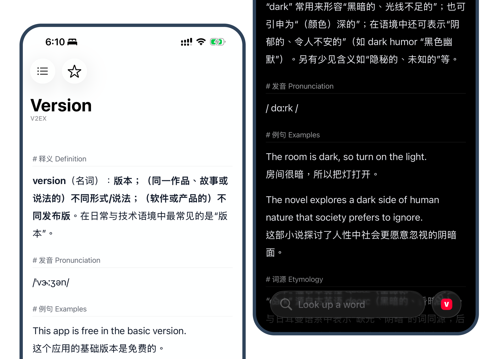
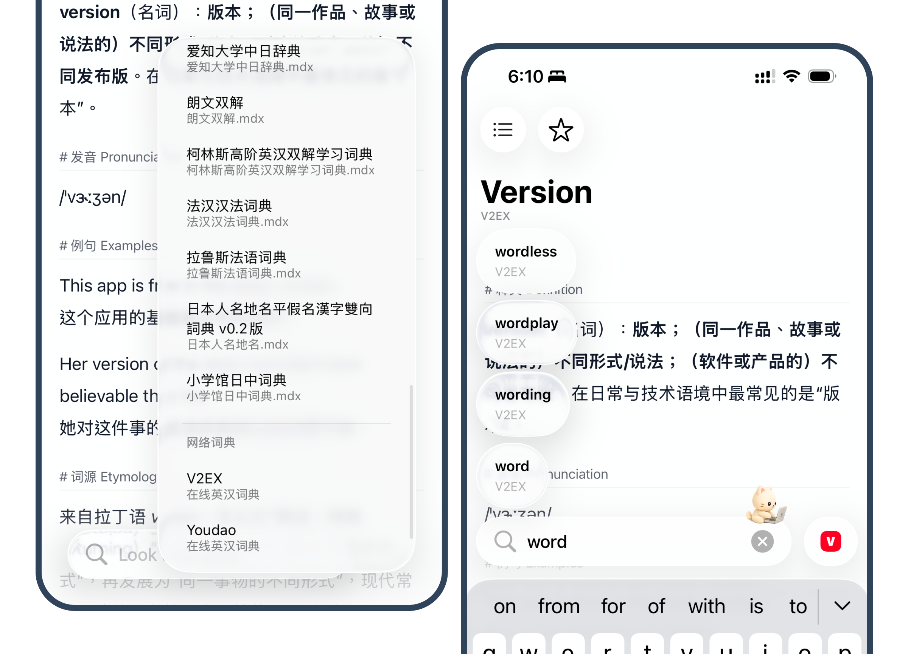
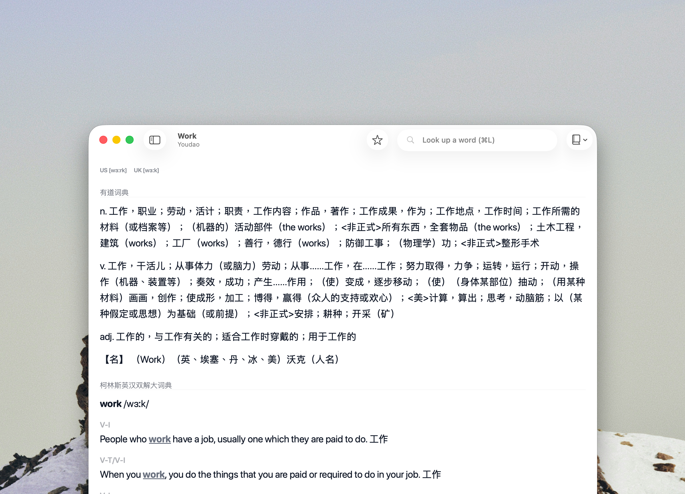

Writing
aDict 3.0 一個老詞典 App 的重寫
aDict,Dictionary,Product,AI,Swift,iOS,macOS · 2026-05-13
一個老項目
aDict 是我一個老項目。
它在 2019 年上架了 1.0 版本，然後一直沒什麼人用。
所以，我也理解到，詞典 app 大概就是這樣的項目狀態，但是我依然很習慣使用自己的 aDict 去查詢想不起來的詞語。
Landing Page

最近這些時間，Codex 變得很好用，所以，我把這個多年沒有維護的詞典 app 重寫了一次。也做了 Landing Page。
歡迎大家去 Landing Page 看看，我知道，Codex 的工作輸出，就是一種熟悉的「AI 味」。
aDict - MDict, StarDict, and Youdao Dictionary App
3.0 重寫版本

這次重寫裡，我也把 V2EX Dict 作為一個在線詞典來源接進來了。它的內容形式和傳統詞典不太一樣，除了釋義和音標，也有例句、詞源、相關詞，有時候還有語境補充。對我這種日常閱讀時順手查詞的人來說，剛好很合適。
aDict 1.x ~ 2.x 是在我的 Apple 開發者能力的提升週期上完成的。
那個時候的我，其實對開發、架構的理解不完整，我不能輕鬆做出容易長命維護的項目。所以 aDict 2.x 的架構依然寫得很爛。
不過，在另一個 app 的長達快 5 年的維護經驗下，現在的我知道怎麼是一個好的架構。
協議化架構

aDict 新版本採用了 aDict Protocol + SPM（以 CLI 為基礎的測試驗收）+ Shell Host app 的組合辦法，很大程度改善了多詞典的支援能力和未來的擴展性。
在 AI（Codex）的開發過程中，CLI 測試方案比原始的 Xcode Test 方案舒服很多，而且 AI 參與開發時，用 CLI 做測試驗收也更順手。
也因為這個開發線路的改變，現在支援 MDict / StarDict 詞典變得十分方便，我追加喜歡的詞典也變得很容易。
TestFlight

Join the aDict - Dictionary lookup beta
目前這個重寫版本依然很陽春，我還需要再迭代一段時間，才會推送到 App Store 作為正式版更新。
如果你也需要一個可以接入 MDict、StarDict 和在線詞典來源的查詞工具，歡迎加入 TestFlight 試用。